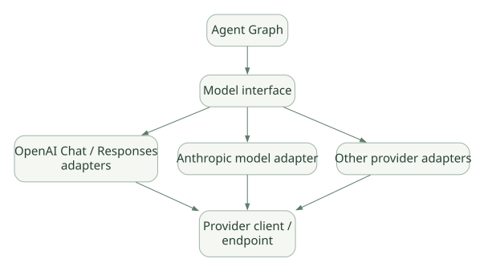

SECOND STUDY / 모델 입력과 Provider
모델 입력과 Provider
이번 단원의 읽는 관점
메시지·Instructions·Schema가 Provider 요청으로 변환되는 과정을 읽습니다.
살펴볼 경계Python deps는 모델 Context가 아니며 API 호환이 기능 호환을 보장하지 않습니다.
이 페이지의 세부 목차
7. Prompt Assembly 및 최종 모델 요청#
7.1 최종 입력은 단순 system + user가 아니다#
모델이 실제로 받는 입력은 다음 요소들로 구성될 수 있다.
ModelRequest ≈
retained conversation messages
+ current user prompt
+ static/dynamic system prompts and instructions
+ capability/toolset-provided instructions
+ provider/model-specific formatted content
request parameters ≈
available function tools + output schema/tool settings
+ model settings + provider settings이 식은 개념도다. 모든 요소가 하나의 시스템 프롬프트 문자열로 합쳐진다는 뜻이 아니다. Provider API의 메시지 배열, Tool Schema, 별도 JSON Schema 파라미터로 나뉠 수 있다.
7.2 모델 호출 직전 살펴봐야 할 순서#
- 호출자가 Message History나 Conversation을 전달했는가?
- 이전 요청의 Pending Tool/부분 응답을 수리해야 하는가?
- 동적 Instructions/System Prompt를 재평가하는가?
- History Processor 또는 Capability가 기록을 줄이거나 수정하는가?
- 현재 Run Step에 맞춰 Toolset을 다시 Resolve하는가?
- 사용할 Model과 Provider가 결정되는가?
- Output Schema가 Native/Prompted/Tool Output 방식 중 무엇으로 전달되는가?
- 실제 Provider SDK의 요청 형식으로 변환하는가?
[SRC] _agent_graph.py의 UserPromptNode.run, _reevaluate_dynamic_prompts, resolve_conversation, ModelRequestNode 관련 코드를 추적한다.
7.3 Instructions vs System Prompt#
- Instructions: Agent가 수행할 역할, 동작, 현재 Task 지시 등을 코드/런타임에서 관리하는 기능.
- System Prompt: 메시지 히스토리의 System Prompt Part 형태로 구성·재평가되는 지시.
- Tool Description: Tool 선택을 위해 모델에 노출되는 별도 스키마 설명.
- Retrieved Documents: Tool 결과 또는 사용자가 제공한 Context로 들어오는 데이터.
동일한 '텍스트 입력'처럼 보이더라도 신뢰 등급과 변경 주기가 다르므로 Cache, Injection 방어, Trace, 권한 설계에서 구별해야 한다.
7.4 Cache가 깨지는 원리 — PydanticAI에서도 중요#
Provider의 Prefix Cache는 '요청 전체를 전송하지 않는다'는 기능이 아니라 일정한 이전 입력 Prefix에 대한 계산을 재사용하는 최적화다. 그러므로 모든 요청에 같은 텍스트를 보내도 Prefix가 변경되면 캐시 재사용이 줄어들 수 있다.
예: [고정 지시 3K] + [Tool Schema 8K] + [대화 기록]과 [고정 지시 3K] + [변경된 동적 시간] + [Tool Schema 8K]는 고정 부분이 같아도 변경 지점 이후의 Prefix 재사용 조건이 달라질 수 있다.
검토 항목: Tool 정의 정렬, 동적 Instructions 삽입 위치, History Processor의 출력, Tool Search로 활성 도구가 변경되는 시점, Provider별 Cache 정책. PydanticAI가 항상 Cache Hit을 보장하는 것은 아니다.
8. Model·Provider·Model Profile 추상화#
8.1 계층을 이해하기#
가로로 이동해서 읽을 수 있습니다. 도식 크게 보기 ↗

원문의 학습용 도식입니다. 연결 방향·분기 조건·점선·쌍방향 연결을 보존해 세로로 배치했습니다. 실제 구현·의사코드·해석의 구분은 본문을 함께 읽으세요.
도식 원문 보기 (Mermaid)
flowchart LR
A[Agent Graph] --> I[Model interface]
I --> OA[OpenAI Chat / Responses adapters]
I --> AN[Anthropic model adapter]
I --> OT[Other provider adapters]
OA --> PE[Provider client / endpoint]
AN --> PE
OT --> PEModel은 메시지/Tool/출력 요청을 해당 모델 API 형식으로 변환하고, Provider는 인증·Base URL·HTTP Client 등 요청 접속 기능을 구성한다. Model Profile은 모델별 지원 능력과 특수 처리의 정보를 담아 Tool/Schema/설정 정책에 영향을 줄 수 있다.
8.2 로컬 LLM·사내 Gateway와의 관계#
PydanticAI를 사용한다고 반드시 특정 상용 모델 API만 호출해야 하는 것은 아니다. 공식 지원 Provider와 OpenAI-compatible 서버, Ollama 등에 연결하는 구성이 가능하다. 다만 연결 가능성 ≠ Tool Calling/JSON Schema/Streaming의 동작 완전 호환이다.
실제로 점검할 것:
- 서버가 Function Tool Schema와 결과 형식을 이해하는가?
- Structured Output이 Native로 지원되는가, Prompted 또는 Tool 방식이 필요한가?
- Tool Call ID, 여러 Function Call, Streaming delta가 정상적으로 매핑되는가?
- 시스템 Prompt, 토큰 사용량, Usage Reporting, Timeout 기능이 정확한가?
- 모델의 실제 능력에 대한 Profile 선언이 과장되지 않았는가?
공식 참고: Models and Providers, Ollama, OpenAI models.
8.3 Provider Failover와 Agent Retry는 다르다#
- Transport 재시도: 네트워크 재접속·HTTP 요청 재시도.
- Model Provider 실패 전환: 다른 모델로 동일 요청 시도.
- Agent Graph Retry: Tool/Output 검증 실패에 따른 모델에게 수정 요청.
세 레이어를 구별하지 않으면 API 호출 횟수·비용·부작용을 과소평가하게 된다.